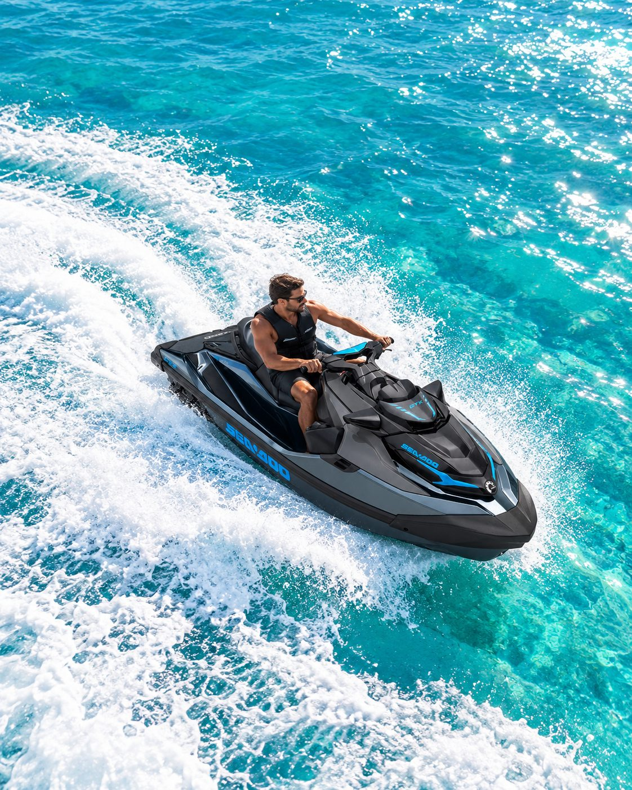
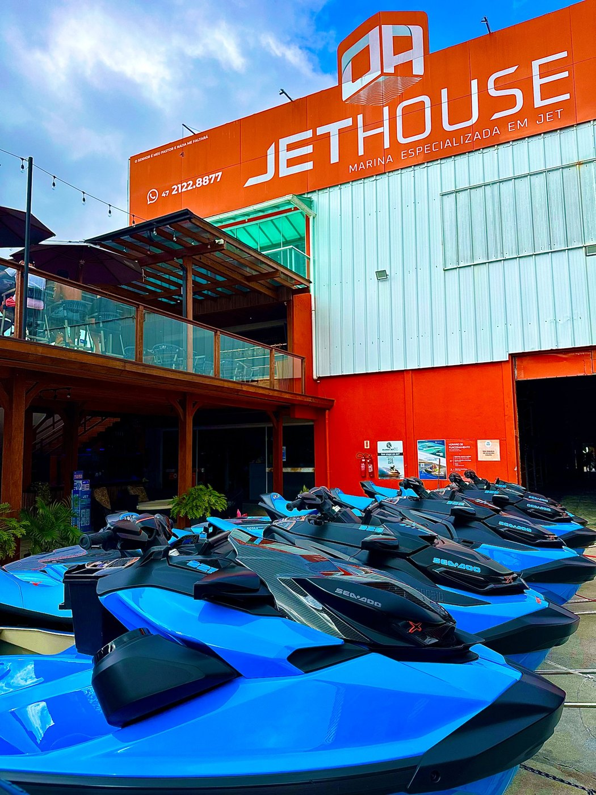
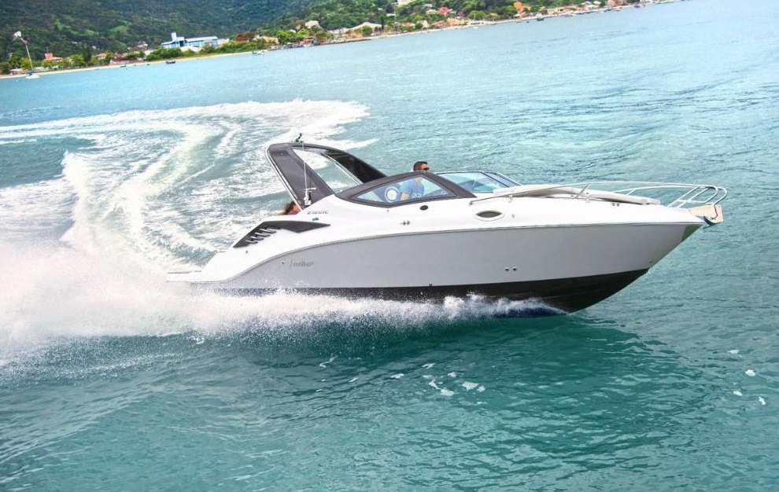

Jet ski
Motonauta
Habilitação para pilotar jet ski (moto aquática). É a habilitação que você precisa para ter o seu jet ou uma cota de jet.
Quero o Motonauta
Em parceria com aEscola Náutica Barcosul
A Barcosul forma navegadores há 12 anos. Você aprende a teoria, faz a aula prática com instrutor e sai preparado para a prova da Marinha do Brasil. E, se já tem embarcação, a Barcosul também cuida da documentação.
Escolha a habilitação de acordo com o que você quer pilotar.

Habilitação para pilotar jet ski (moto aquática). É a habilitação que você precisa para ter o seu jet ou uma cota de jet.
Quero o Motonauta
Habilitação para conduzir lanchas e outras embarcações de esporte e recreio na navegação interior: baías, rios, lagos e áreas abrigadas.
Quero o Arrais Amador
Para quem quer ir mais longe: conduzir embarcações de esporte e recreio na navegação costeira, ao longo do litoral.
Quero o Mestre AmadorDiga qual habilitação você quer e receba os valores e as datas das próximas turmas.
Navegação, regras de segurança e tudo o que cai na prova da Marinha.
Na água, com instrutor, para você pilotar com segurança.
Você faz a prova da Marinha do Brasil e recebe a sua habilitação.
A Barcosul resolve a burocracia da Marinha para você.
Marina JetHouse, Balneário Camboriú (SC)
Atendemos alunos de Balneário Camboriú, Camboriú, Itapema, Itajaí, Navegantes, Porto Belo, Bombinhas, Brusque e Blumenau.
Para pilotar jet ski é preciso a habilitação de Motonauta, emitida pela Marinha do Brasil. A Barcosul prepara você para a prova.
O Motonauta é para jet ski. O Arrais Amador é para lanchas e outras embarcações de esporte e recreio na navegação interior. Quem quer pilotar os dois pode tirar as duas habilitações.
É a habilitação para navegar mais longe, na navegação costeira, ao longo do litoral. É indicada para quem já tem experiência e quer fazer passeios maiores.
A prova é aplicada pela Marinha do Brasil. A Barcosul prepara você com a parte teórica e a aula prática, e orienta sobre o agendamento da prova.
Sim. Além da escola, a Barcosul é despachante marítimo: 2ª via de habilitação, inscrição de embarcação, renovações e transferências.
Na Marina JetHouse, em Balneário Camboriú.
Os valores e as datas das próximas turmas são passados pelo WhatsApp. É só chamar que você recebe tudo na hora.
Me chama no WhatsApp que eu te passo os valores e as datas das próximas turmas.
Quero minha habilitação @barcosul